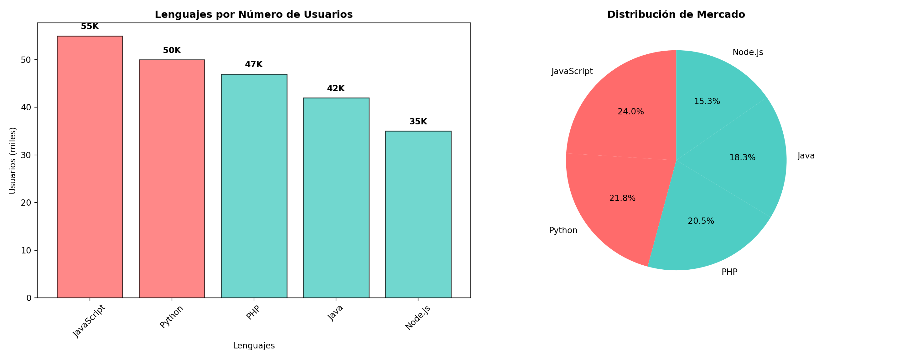

Este documento demuestra cómo crear gráficos de barras utilizando Python (Matplotlib), SQL para consultas de datos, y R (ggplot2) para visualizaciones. Esta aproximación multilenguaje permite aprovechar las fortalezas específicas de cada herramienta.
Bar Charts - Python (Matplotlib)
Gráfico Básico de Barras Verticales
Code
import matplotlib.pyplot as pltimport numpy as np# Datos de lenguajes de programacióneje_x = ['Python', 'R', 'Node.js', 'PHP', 'Java', 'JavaScript']eje_y = [50, 20, 35, 47, 42, 55]plt.figure(figsize=(12, 7))colors = ['#3776ab', '#276DC3', '#8CC84B', '#777BB4', '#ED8B00', '#F7DF1E']bars = plt.bar(eje_x, eje_y, color=colors, alpha=0.8, edgecolor='black', linewidth=1)# Agregar valores encima de las barrasfor bar in bars: height = bar.get_height() plt.text(bar.get_x() + bar.get_width()/2., height +0.5,f'{int(height)}K', ha='center', va='bottom', fontweight='bold')plt.ylabel('Cantidad de usuarios (miles)', fontsize=12)plt.xlabel('Lenguajes de programación', fontsize=12)plt.title('Popularidad de Lenguajes de Programación', fontsize=14, fontweight='bold')plt.xticks(rotation=45)plt.grid(axis='y', alpha=0.3)plt.tight_layout()plt.show()
Gráfico de Barras Horizontales
Code
import matplotlib.pyplot as plt# Datos de habilidades profesionaleshabilidades = ['Programación', 'Ciencia de Datos', 'Matemáticas', 'Ingeniería', 'Diseño', 'Marketing']empleados = [76, 31, 45, 57, 38, 29]plt.figure(figsize=(12, 8))colors = ['#FF6B6B', '#4ECDC4', '#45B7D1', '#96CEB4', '#FFEAA7', '#DDA0DD']bars = plt.barh(habilidades, empleados, color=colors, alpha=0.8, edgecolor='black', linewidth=1)# Agregar valores al final de las barrasfor i, bar inenumerate(bars): width = bar.get_width() plt.text(width +1, bar.get_y() + bar.get_height()/2.,f'{int(width)}', ha='left', va='center', fontweight='bold')plt.xlabel('Número de empleados', fontsize=12)plt.ylabel('Habilidades', fontsize=12)plt.title('Distribución de Habilidades en el Equipo', fontsize=14, fontweight='bold')plt.grid(axis='x', alpha=0.3)plt.tight_layout()plt.show()
SELECT habilidad, cantidad,ROUND(AVG(cantidad) OVER(), 1) as promedio_general,ROUND(cantidad -AVG(cantidad) OVER(), 1) as diferencia_promedio,CASEWHEN cantidad >AVG(cantidad) OVER() THEN'Por encima del promedio'ELSE'Por debajo del promedio'ENDas clasificacionFROM empleados_habilidades ORDERBY cantidad DESC;
6 records
habilidad
cantidad
promedio_general
diferencia_promedio
clasificacion
Programación
76
46
30
Por encima del promedio
Ingeniería
57
46
11
Por encima del promedio
Matemáticas
45
46
-1
Por debajo del promedio
Diseño
38
46
-8
Por debajo del promedio
Ciencia de Datos
31
46
-15
Por debajo del promedio
Marketing
29
46
-17
Por debajo del promedio
Evolución Temporal de Lenguajes
Code
SELECT año, python, r, javascript, (python + r + javascript) as total_usuarios,ROUND(python *100.0/ (python + r + javascript), 1) as porcentaje_pythonFROM ventas_por_año ORDERBY año;
5 records
año
python
r
javascript
total_usuarios
porcentaje_python
2020
45
15
40
100
45.0
2021
50
20
45
115
43.5
2022
55
22
50
127
43.3
2023
60
25
55
140
42.9
2024
65
28
60
153
42.5
Bar Charts - R (ggplot2)
Gráfico Básico con R
Code
# Obtener datos de SQLdatos_lenguajes <-dbGetQuery(con, "SELECT lenguaje, usuarios FROM ventas_programacion ORDER BY usuarios DESC")# Crear gráfico con ggplot2ggplot(datos_lenguajes, aes(x =reorder(lenguaje, usuarios), y = usuarios, fill = lenguaje)) +geom_bar(stat ="identity", alpha =0.8, color ="black", size =0.5) +geom_text(aes(label =paste0(usuarios, "K")), hjust =-0.1, fontface ="bold") +coord_flip() +labs(title ="Popularidad de Lenguajes de Programación",subtitle ="Datos obtenidos de consulta SQL",x ="Lenguajes de Programación", y ="Usuarios (miles)") +theme_minimal() +theme(legend.position ="none",plot.title =element_text(size =16, face ="bold"),plot.subtitle =element_text(size =12),axis.text =element_text(size =11),axis.title =element_text(size =12, face ="bold")) +scale_fill_viridis_d(option ="plasma") +scale_y_continuous(expand =expansion(mult =c(0, 0.1)))
Gráfico de Habilidades
Code
# Obtener datos de habilidadesdatos_habilidades <-dbGetQuery(con, "SELECT habilidad, cantidad FROM empleados_habilidades ORDER BY cantidad DESC")ggplot(datos_habilidades, aes(x =reorder(habilidad, cantidad), y = cantidad, fill = cantidad)) +geom_bar(stat ="identity", alpha =0.8, color ="black", size =0.5) +geom_text(aes(label = cantidad), hjust =-0.1, fontface ="bold") +coord_flip() +labs(title ="Distribución de Habilidades en el Equipo",subtitle ="Número de empleados por habilidad",x ="Habilidades", y ="Número de empleados") +theme_minimal() +theme(legend.position ="none",plot.title =element_text(size =16, face ="bold"),plot.subtitle =element_text(size =12),axis.text =element_text(size =11),axis.title =element_text(size =12, face ="bold")) +scale_fill_gradient(low ="#E8F4FD", high ="#1E88E5") +scale_y_continuous(expand =expansion(mult =c(0, 0.1)))
Gráfico de Evolución Temporal
Code
# Obtener datos temporalesdatos_tiempo <-dbGetQuery(con, "SELECT * FROM ventas_por_año ORDER BY año")# Transformar datos para ggplotdatos_long <-pivot_longer(datos_tiempo, cols =c(python, r, javascript), names_to ="lenguaje", values_to ="usuarios")# Crear gráficoggplot(datos_long, aes(x =factor(año), y = usuarios, fill = lenguaje)) +geom_bar(stat ="identity", position ="dodge", alpha =0.8, color ="black", size =0.3) +geom_text(aes(label =paste0(usuarios, "K")), position =position_dodge(width =0.9), vjust =-0.5, fontface ="bold", size =3) +labs(title ="Evolución de Usuarios por Lenguaje (2020-2024)",subtitle ="Crecimiento anual de las principales tecnologías",x ="Años", y ="Usuarios (miles)",fill ="Lenguaje") +theme_minimal() +theme(plot.title =element_text(size =16, face ="bold"),plot.subtitle =element_text(size =12),axis.text =element_text(size =11),axis.title =element_text(size =12, face ="bold"),legend.title =element_text(size =12, face ="bold"),legend.text =element_text(size =11)) +scale_fill_manual(values =c("python"="#3776ab", "r"="#276DC3", "javascript"="#F7DF1E")) +scale_y_continuous(expand =expansion(mult =c(0, 0.1)))
Integración SQL + Python
Combinemos una consulta SQL compleja con visualización en Python:
Code
# Ejecutar consulta SQL avanzadadatos_analisis <-dbGetQuery(con, "SELECT lenguaje, usuarios, CASE WHEN usuarios >= 50 THEN 'Alto' WHEN usuarios >= 35 THEN 'Medio' ELSE 'Bajo' END as categoria, ROUND(usuarios * 100.0 / (SELECT SUM(usuarios) FROM ventas_programacion), 1) as porcentajeFROM ventas_programacion WHERE usuarios > 25ORDER BY usuarios DESC")# Pasar datos a Pythonpy$datos_desde_r <- datos_analisis
Code
import matplotlib.pyplot as pltimport pandas as pd# Usar datos de R/SQLdf = pd.DataFrame(datos_desde_r)# Crear subplot con dos gráficosfig, (ax1, ax2) = plt.subplots(1, 2, figsize=(15, 6))# Gráfico 1: Barras por usuarioscolors = ['#FF6B6B'if cat =='Alto'else'#4ECDC4'if cat =='Medio'else'#45B7D1'for cat in df['categoria']]bars1 = ax1.bar(df['lenguaje'], df['usuarios'], color=colors, alpha=0.8, edgecolor='black')ax1.set_title('Lenguajes por Número de Usuarios', fontweight='bold')ax1.set_xlabel('Lenguajes')ax1.set_ylabel('Usuarios (miles)')ax1.tick_params(axis='x', rotation=45)# Agregar valores en las barrasfor bar in bars1: height = bar.get_height() ax1.text(bar.get_x() + bar.get_width()/2., height +1,f'{int(height)}K', ha='center', va='bottom', fontweight='bold')# Gráfico 2: Distribución por porcentajewedges, texts, autotexts = ax2.pie(df['porcentaje'], labels=df['lenguaje'], autopct='%1.1f%%', colors=colors, startangle=90)ax2.set_title('Distribución de Mercado', fontweight='bold')plt.tight_layout()plt.show()

Análisis Comparativo Final
Resumen de Datos por Categoría
Code
SELECT categoria,COUNT(*) as cantidad_lenguajes,AVG(usuarios) as promedio_usuarios,SUM(usuarios) as total_usuariosFROM (SELECT lenguaje, usuarios,CASEWHEN usuarios >=50THEN'Alto'WHEN usuarios >=35THEN'Medio'ELSE'Bajo'ENDas categoriaFROM ventas_programacion) GROUPBY categoriaORDERBY total_usuarios DESC;